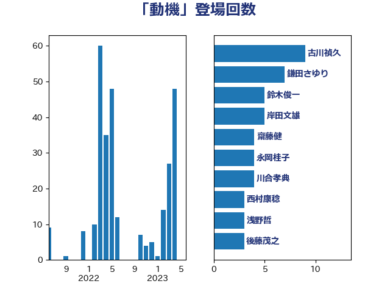

単語「動機」

| 古川禎久 | 自由民主党 | 9 回 |
| 鎌田さゆり | 立憲民主党 | 7 回 |
| 鈴木俊一 | 自由民主党 | 5 回 |
| 岸田文雄 | 自由民主党 | 5 回 |
| 齋藤健 | 自由民主党 | 4 回 |
| 永岡桂子 | 自由民主党 | 4 回 |
| 川合孝典 | 国民民主党 | 4 回 |
| 西村康稔 | 自由民主党 | 3 回 |
| 浅野哲 | 国民民主党 | 3 回 |
| 後藤茂之 | 自由民主党 | 3 回 |
| 小沼巧 | 立憲民主党 | 3 回 |
| 小倉將信 | 自由民主党 | 3 回 |
| 井坂信彦 | 立憲民主党 | 3 回 |
| 中川正春 | 立憲民主党 | 3 回 |
| 高木宏壽 | 自由民主党 | 2 回 |
| 長妻昭 | 立憲民主党 | 2 回 |
| 野間健 | 立憲民主党 | 2 回 |
| 野田聖子 | 自由民主党 | 2 回 |
| 萩生田光一 | 自由民主党 | 2 回 |
| 若宮健嗣 | 自由民主党 | 2 回 |
| 簗和生 | 自由民主党 | 2 回 |
| 稲富修二 | 立憲民主党 | 2 回 |
| 白石洋一 | 立憲民主党 | 2 回 |
| 田村まみ | 国民民主党 | 2 回 |
| 深澤陽一 | 自由民主党 | 2 回 |
| 武田良太 | 自由民主党 | 2 回 |
| 森田俊和 | 立憲民主党 | 2 回 |
| 林芳正 | 自由民主党 | 2 回 |
| 末次精一 | 立憲民主党 | 2 回 |
| 岩谷良平 | 日本維新の会 | 2 回 |
| 山添拓 | 日本共産党 | 2 回 |
| 守島正 | 日本維新の会 | 2 回 |
| 上月良祐 | 自由民主党 | 2 回 |
| 高橋千鶴子 | 日本共産党 | 1 回 |
| 音喜多駿 | 日本維新の会 | 1 回 |
| 階猛 | 立憲民主党 | 1 回 |
| 阿部弘樹 | 日本維新の会 | 1 回 |
| 金子恭之 | 自由民主党 | 1 回 |
| 金子俊平 | 自由民主党 | 1 回 |
| 赤嶺政賢 | 日本共産党 | 1 回 |
| 藤岡隆雄 | 立憲民主党 | 1 回 |
| 羽田次郎 | 立憲民主党 | 1 回 |
| 神谷裕 | 立憲民主党 | 1 回 |
| 石川昭政 | 自由民主党 | 1 回 |
| 石井苗子 | 日本維新の会 | 1 回 |
| 田村智子 | 日本共産党 | 1 回 |
| 牧義夫 | 立憲民主党 | 1 回 |
| 渡辺孝一 | 自由民主党 | 1 回 |
| 渡辺周 | 立憲民主党 | 1 回 |
| 渡辺博道 | 自由民主党 | 1 回 |
| 清水貴之 | 日本維新の会 | 1 回 |
| 梅谷守 | 立憲民主党 | 1 回 |
| 柴田巧 | 日本維新の会 | 1 回 |
| 柳ヶ瀬裕文 | 日本維新の会 | 1 回 |
| 松野博一 | 自由民主党 | 1 回 |
| 本村伸子 | 日本共産党 | 1 回 |
| 末松信介 | 自由民主党 | 1 回 |
| 有村治子 | 自由民主党 | 1 回 |
| 斎藤アレックス | 国民民主党 | 1 回 |
| 平沼正二郎 | 自由民主党 | 1 回 |
| 平将明 | 自由民主党 | 1 回 |
| 川崎ひでと | 自由民主党 | 1 回 |
| 山田勝彦 | 立憲民主党 | 1 回 |
| 山本佐知子 | 自由民主党 | 1 回 |
| 山岡達丸 | 立憲民主党 | 1 回 |
| 山下芳生 | 日本共産党 | 1 回 |
| 小西洋之 | 立憲民主党 | 1 回 |
| 小田原潔 | 自由民主党 | 1 回 |
| 奥野総一郎 | 立憲民主党 | 1 回 |
| 太栄志 | 立憲民主党 | 1 回 |
| 大西健介 | 立憲民主党 | 1 回 |
| 大塚耕平 | 国民民主党 | 1 回 |
| 塩川鉄也 | 日本共産党 | 1 回 |
| 土田慎 | 自由民主党 | 1 回 |
| 加藤勝信 | 自由民主党 | 1 回 |
| 伊藤孝恵 | 国民民主党 | 1 回 |
| 三谷英弘 | 自由民主党 | 1 回 |
| 三上えり | 立憲民主党 | 1 回 |
| 一谷勇一郎 | 日本維新の会 | 1 回 |
| おおつき紅葉 | 立憲民主党 | 1 回 |